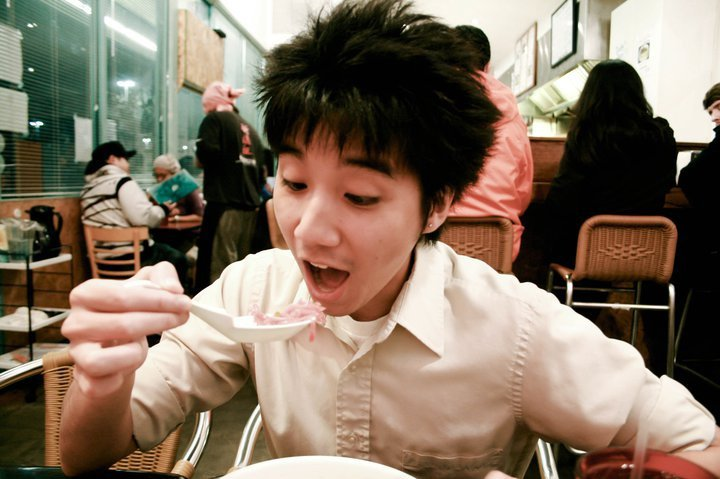
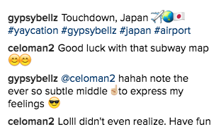
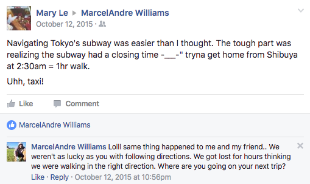
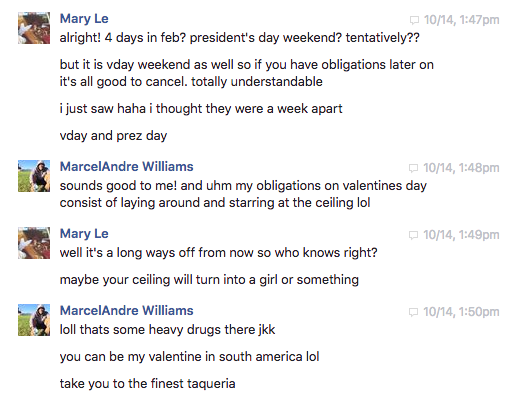
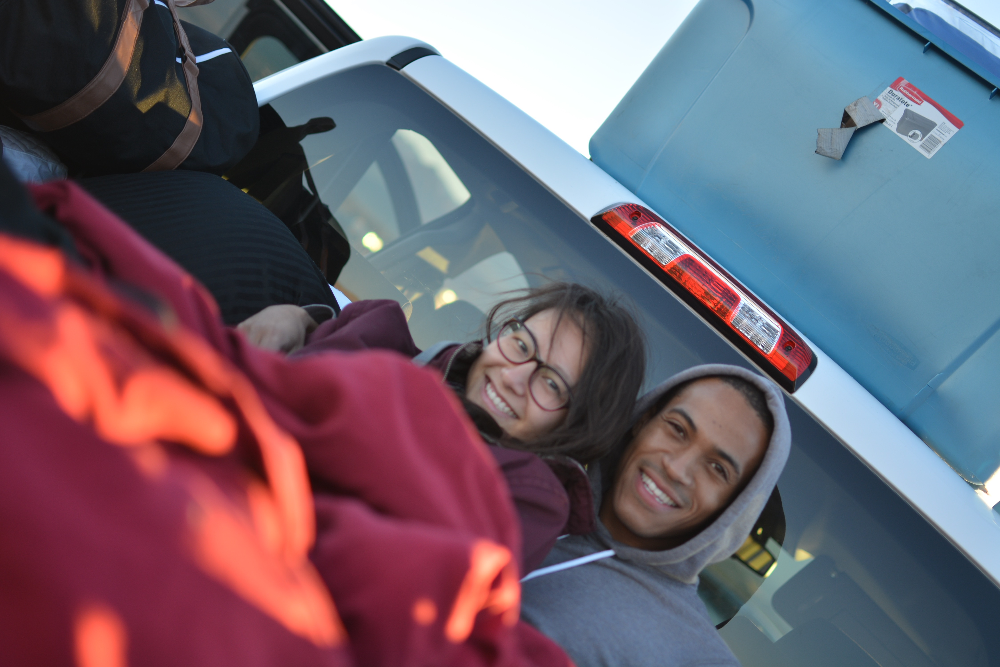

See that
See that

I knew we were gonna be something special since that day.
Who would have thought that the scariest weekend of the year would turn out to be so "highly" enjoyable with each other’s company.
Since then we have continued to have many great adventures together.


But let’s pause for a minute and go back to the very beginning
See this guy?
Who would have thought that a last minute decision for me to go to some random kid’s birthday party just to say farewell to Allen would result in something like this in our future.


That night was the first story that we had to share: You were the random kid, this birthday boy who was barefooted, shirtless, and covered in cake, chasing me down the street for a hug in the middle of the night. You were fast! But I am surprisingly fast too >:]
But did you know that I eventually slowed down to let you catch up to me? Juuuust because it was you were this good-looking blasian boy that Allen has hyped up. Also, I was intrigued to see what you would actually do once you've actually caught me.
But since that night, our relationship was put slightly on pause Years passed us by and we saw each other's lives only through the lens of social media and that was all the knowledge that we had of one another. Random likes and comments here and there were futile.
All but one.
Afterwards I thought to update you, not knowing if you'd care or not, on how my navigational skills in Japan.
I can’t begin to tell you how gleefully tickled I was when that red bubble from you appeared for the first time in my inbox.
You told me how you have been following my year of roaming and traveling while you were stuck behind a desk and table. And how you were inspired to go live a year in Japan teaching little kids from the countryside ghetto English slang, and I thought to myself, "Wow, I inspired somebody!"
We talked about traveling and planned for our first trip to Bolivia to see the salt flat lake, rememeber?
(Valentine's Day date at the finest taqueria in South America, eh?)
Salar de Uyuni, Bolivia
Just a couple of days talking to you online was all it took for me to know that you were someone special.
The next day I came into work staring at my computer with anticipation, “What if yesterday was just a good conversation that we both shared? Was that it?”
“Whatever,” I thought. “I’ll just continue the conversation by sending him something related to what we were talking about. And let’s just see how he will respond. I’ll risk being that annoying girl." And voilà. There you are and there you stayed.
Our conversations began to last longer and longer. You made the conversations flow so effortlessly, I looked forward to seeing those little red bubbles every waking moment, and antipcated what we would be talking about the next day before sleeping.
Death Valley, CA
It was a complete leap of faith going on this trip. It was our second day of talking and I barely knew you. But you were this person who sought out adventure and I wanted to adventure with this person who was so full of life.
Death Valley was definitely a special trip. It was you and me under the vast starry night in the back of a pick-up truck. The temperature dropped but laying next to you, I felt protected and warm.
It was a life changing night in more ways than one.
I was completely your girl.
And what a pleasure it was to have been loved and spoiled by you.
“Even if we were married, I’d still give you flowers because I know how much you love them.”
This month carried with it an array of mixed emotions and anticipations regarding our jobs and of our relationship for the upcoming year. The long distance between us made me miss you so much whenever we were apart.
I was so anxioius of our future. We had just started dating and all these life things came at us from all sides. Once again, you came through. You were so confident in us and that we are going to make it.
You were amazing. I loved hearing how you were so sure about us, and how you once said that you'll "carry the burden of [my] doubts, and prove that this is real."
The holidays came and I got to spend it with you doing a unique trip to New Orleans. Even though we were unprepared for the cold, I still loved every moment of it. We got to spend the week together like as if we lived together in our own place. It sparked in me a nice vision of our future together.

We were both funemployed. Both looking to somehow fill in the gapping pieces that would bring us closer to our future. Your decision to want to find a job up in the Bay Area was surprisingly shocking to me. It was a big change. I’ve known people to talk about things but never follow through — but you did. I had so much respect and admiration for you since.
Thank you for being my first Disneyland date.

All of your interviews and Greyhound trips paid off! It was the beginning of a new chapter for you with the new job at Shift. And Gypsy Palace felt like my second home whenever I got to see you.


I have always disliked Valentine's Day growing up. I would see the day as a scam; I blamed capitalism and Hallmark for taking advantage of people's wallets but in reality, I never really had a reason to celebrate it and was taught to believe that it was just another ordinary day.
I never really saw the magic of Valentine's Day until you came along and made it so special. After 27 years, I finally got to experience the magic of this Hallmark holiday. And I loved how you continue to open my mind and heart to the lovlier things in life.

You now have a semi-permanent address up in the Bay Area and I started working.
The best part is that we can see each other whenever and be adulting together...! Kinda.

Thailand!
The effects that NOLA’s cold weather had on you, was the same effects (x100) that Thailand’s hot and humidity had on me. Yet you were still patient with me despite how I was towards you when the weather and other factors drove me insane with fury and irritability. I apologize that our first international trip together couldn’t yield more favorable memories but a few handful. However, there is no one else that I'd rather go on that trip with than you.
I moved in with you. It was the first time ever that I cohabited with someone and sharing a bed with them every night. Everything was so new to me, I got to be with you every single day. During those months, I felt like we had an infinite amount of time on our side. The best part for me was ending every night with a kiss “good night” instead of “good-bye.”
I quickly began to grow even more comfortable around you during the closeness of our space. It started to feel like I was losing some sort of self-identity and I began to panic. Without realizing what was going on, I begain to revealed to you the darker and uglier side of me during my moments of stress and confusion. The complexities of my need for space and independence, and my love and want for you drove me insane.
However, even when we fought and I withdrew from you, in my heart I never stopped loving you. Regardless of who else was around or what was happening, it was always you and only you.


As if the previous months were not already trying between us enough, we had this month.
I really wished that things could have worked out between us during this time. Everything was coming at you and at me, and we were just coming at each other, bumping heads. I started to feel like as if we didn't even know each other anymore, and yet we have lost the novelty and initial excitement of discovering each other. You and I were both drifting further and further away from each other. We fell into this routine of simply being physically present and doing things together, but not actually connecting mentally, emotionally, or intellectually, and all the while being unhappy with our current situation.
There were times when I wanted to talk to you about how I felt but I just couldn't find the words to say while I was with you - there were always little distractions. I thought those quiet evening walks could help me open up but there was this disconnect between us and I was afraid and nervous to bring anything up, not wanting to ruin the present moment; the walk was just for you and me, no phones or tv or anything else that could enter our quality time.
Real quality time.
That was what we desperately needed - free of technological distractions, Netflix, social media, games... etc. This was something we didn't have that during this time but was something that we had in abundance in the beginning; it made me fall in love with you inside your SUV over the weekends we spent camping outside listening to music and enjoying each other's company. Despite all that was going on between us during that time, that was all I really wanted, you and me.

By now the earth has orbited a full complete circle around the sun from the time we first started talking. There’s been a lot of ups & downs but I’m glad that it was with you through out it all. Thank you for the most emotionally eventful year, helping me learn and experience new things that I never would have imagined otherwise. I love having you by my side though all of it, thank you for being my main man and for finding and lifting my heart.
I am excied for next year with you! It will be a good year for the both of us! Just wait and see. I have a good feeling about it :) can’t wait to spend 2017 with you